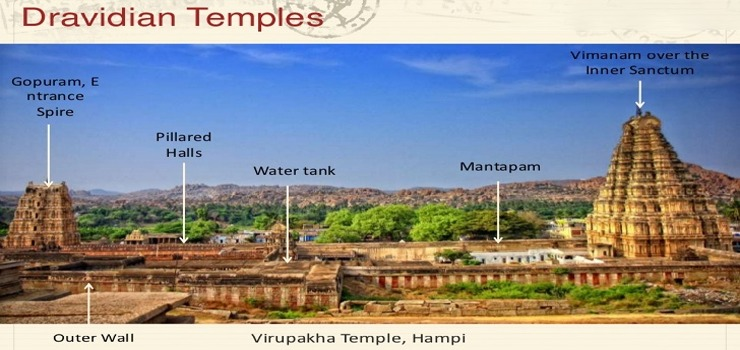
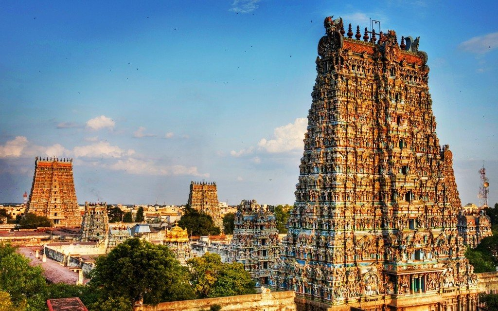

Structure of the Temples

The Dravida style of temple architecture, prominent in southern India, particularly in the states of Tamil Nadu, Karnataka, and Andhra Pradesh, is characterized by its unique features that distinguish it from other architectural styles. This style flourished from the 6th century CE onward and continues to influence the construction of temples in the region. Here are the key characteristics and details of the Dravida style:
Key Features
Vimana (Tower):
*The most distinctive feature of the Dravida style is the pyramidal tower or vimana that rises above the sanctum sanctorum (garbhagriha).
*The vimana is typically composed of several tiers, each marked by a horizontal molding.
Shikhara:
*Unlike the Nagara style, the Dravida shikhara is not curvilinear but rather pyramidal in shape, resembling a stepped pyramid.
*The top of the shikhara is adorned with a small structure known as the stupi or kalasha.
Mandapa (Porch):
*Dravida temples have a hall or mandapa, often with intricately carved pillars, leading to the main sanctum.
*The pillars are characterized by their vertical ridges and motifs.
Gopuram (Entrance Tower):
*Dravida temples are known for their monumental entrance towers or gopurams, which are ornately decorated with sculptures and reliefs.
*Gopurams are often elaborately carved with scenes from Hindu mythology.
Axial Alignment:
*Dravida temples are characterized by axial alignment, with the main entrance aligned with the sanctum sanctorum, providing a clear line of sight to the principal deity.
Prakara (Enclosure Walls):
*Temples in the Dravida style are enclosed by high walls known as prakara, creating a sacred space around the temple complex.
Pillared Corridors:
*Some Dravida temples feature pillared corridors around the main sanctum, providing devotees with a circumambulatory path (pradakshina).
Vyalas and Kirtimukhas:
*Sculptures of mythical creatures called vyalas and face with exaggerated features, known as kirtimukhas, are commonly found in Dravida temples.
Fivefold Floor Plan:
*Many Dravida temples follow a fivefold floor plan, known as panchayatana, where the main shrine is surrounded by four subsidiary shrines at the corners.
Examples of Dravida Temples:
Brihadeshwara Temple, Thanjavur: A UNESCO World Heritage Site, it is a grand example of Chola Dravida architecture.
Meenakshi Temple, Madurai: Known for its massive gopurams and intricate sculptures, it is a prime example of the Dravida style.
Virupaksha Temple, Hampi: An ancient temple in Karnataka with a well-preserved Dravida-style vimana.
The Dravida style, with its emphasis on monumental entrance towers and pyramidal vimanas, continues to play a significant role in the architectural identity of southern Indian temples. It reflects the rich cultural and artistic traditions of the region, contributing to the diversity of Indian temple architecture.